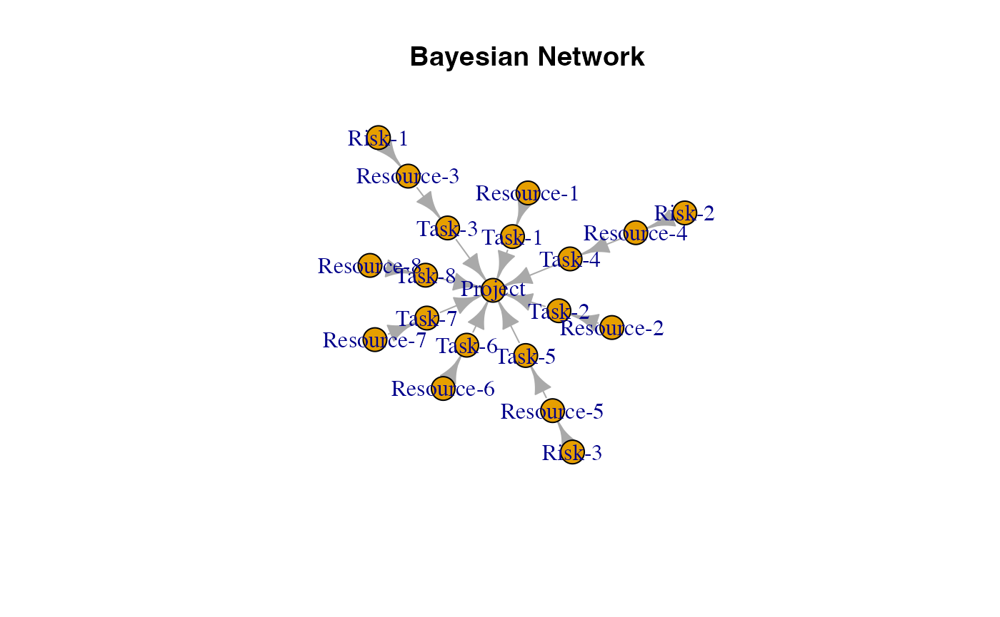

Introduction
Bayesian networks are a type of mathematical model that represent dependencies and uncertainties using probability theory and graph structures. A Bayesian network is a directed acyclic graph (DAG) where nodes represent random variables and edges represent dependencies between the variables.
This document explores Bayesian networks for project risk analysis and decision making.
Project Risk Analysis
Suppose there is a simple roadway project. The project consists of 8 tasks, each with a specific duration and cost. The tasks are as follows:
roadway_tasks <- data.frame(
ID = c("L", "M", "N", "O", "P", "Q", "R", "S"),
Label = c(
"Task-1",
"Task-2",
"Task-3",
"Task-4",
"Task-5",
"Task-6",
"Task-7",
"Task-8"
),
Task = c(
"Survey and Site Assessment",
"Design and Planning",
"Permitting and Approvals",
"Excavation and Grading",
"Pavement Installation",
"Drainage and Utilities Installation",
"Signage and Markings",
"Final Inspection and Handover"
),
Project_ID = rep("P", 8)
)
knitr::kable(roadway_tasks, caption = "Roadway Tasks")| ID | Label | Task | Project_ID |
|---|---|---|---|
| L | Task-1 | Survey and Site Assessment | P |
| M | Task-2 | Design and Planning | P |
| N | Task-3 | Permitting and Approvals | P |
| O | Task-4 | Excavation and Grading | P |
| P | Task-5 | Pavement Installation | P |
| Q | Task-6 | Drainage and Utilities Installation | P |
| R | Task-7 | Signage and Markings | P |
| S | Task-8 | Final Inspection and Handover | P |
Resources
The project requires various resources to complete the tasks. The resources include surveyors, engineers, regulatory support, heavy machinery, pavement and related machinery, drainage material and equipment, painters, traffic signs, road markers, inspectors, and quality control support. The resources are allocated to specific tasks based on their expertise and availability.
roadway_resources <- data.frame(
ID = c("D", "E", "F", "G", "H", "I", "J", "K"),
Label = c(
"Resource-1",
"Resource-2",
"Resource-3",
"Resource-4",
"Resource-5",
"Resource-6",
"Resource-7",
"Resource-8"
),
Resource = c(
"Surveyer",
"Engineer",
"Regulatory Support",
"Heavy Machinery",
"Pavement and Related Machinery",
"Drainage Material and Equipment",
"Painters, Traffic Signs, Road Markers",
"Inspectors and Quality Control Support"
),
Task_ID = c("L", "M", "N", "O", "P", "Q", "R", "S"),
Task = c(
"Survey and Site Assessment",
"Design and Planning",
"Permitting and Approvals",
"Excavation and Grading",
"Pavement Installation",
"Drainage and Utilities Installation",
"Signage and Markings",
"Final Inspection and Handover"
),
Mean = c(
10000,
20000,
3500,
35000,
100000,
25000,
6500,
2000
),
SD = c(
2000,
5000,
1000,
10000,
20000,
5000,
1500,
500
)
)
knitr::kable(roadway_resources, caption = "Roadway Resources")| ID | Label | Resource | Task_ID | Task | Mean | SD |
|---|---|---|---|---|---|---|
| D | Resource-1 | Surveyer | L | Survey and Site Assessment | 10000 | 2000 |
| E | Resource-2 | Engineer | M | Design and Planning | 20000 | 5000 |
| F | Resource-3 | Regulatory Support | N | Permitting and Approvals | 3500 | 1000 |
| G | Resource-4 | Heavy Machinery | O | Excavation and Grading | 35000 | 10000 |
| H | Resource-5 | Pavement and Related Machinery | P | Pavement Installation | 100000 | 20000 |
| I | Resource-6 | Drainage Material and Equipment | Q | Drainage and Utilities Installation | 25000 | 5000 |
| J | Resource-7 | Painters, Traffic Signs, Road Markers | R | Signage and Markings | 6500 | 1500 |
| K | Resource-8 | Inspectors and Quality Control Support | S | Final Inspection and Handover | 2000 | 500 |
Risks
The project is subject to various risks that may impact the cost, duration, and quality of the project. The risks include delays in permitting and approvals, unforeseen site conditions, material price fluctuations, labor shortages, weather disruptions, equipment breakdowns, design changes, and regulatory changes. Each risk event has a probability of occurrence, an impact on the project, and a root cause. The root causes are related to resources, tasks, or external factors.
roadway_risks <- data.frame(
Risk_ID = c("A", "B", "C"),
Name = c(
"Risk-1",
"Risk-2",
"Risk-3"
),
Risk = c(
"Delays in Permitting and Approvals",
"Unforeseen Site Conditions",
"Material Price Fluctuations"
),
Probability = c(
0.9,
0.95,
0.8
),
Resource_ID = c("F", "G", "H"),
Resource_Impacted = c(
"Regulatory Support",
"Heavy Machinery",
"Pavement and Related Machinery"
),
Mean = c(
7000,
70000,
200000
),
SD = c(
2000,
20000,
40000
)
)
knitr::kable(roadway_risks, caption = "Roadway Risks")| Risk_ID | Name | Risk | Probability | Resource_ID | Resource_Impacted | Mean | SD |
|---|---|---|---|---|---|---|---|
| A | Risk-1 | Delays in Permitting and Approvals | 0.90 | F | Regulatory Support | 7e+03 | 2000 |
| B | Risk-2 | Unforeseen Site Conditions | 0.95 | G | Heavy Machinery | 7e+04 | 20000 |
| C | Risk-3 | Material Price Fluctuations | 0.80 | H | Pavement and Related Machinery | 2e+05 | 40000 |
Bayesian Network
To model the project risks and dependencies, we can create a Bayesian network. The Bayesian network will represent the relationships between tasks, resources, and risks in the project. The network will help us analyze the impact of risks on the project outcomes and make informed decisions.
First, we need to define the nodes and edges of the Bayesian network. The nodes represent the tasks, resources, and risks in the project, and the edges represent the dependencies between them.
nodes <- data.frame(
id = c("A", "B", "C", "D", "E", "F", "G", "H", "I", "J", "K", "L", "M", "N", "O", "P", "Q", "R", "S", "T"),
label = c(
"Risk-1",
"Risk-2",
"Risk-3",
"Resource-1",
"Resource-2",
"Resource-3",
"Resource-4",
"Resource-5",
"Resource-6",
"Resource-7",
"Resource-8",
"Task-1",
"Task-2",
"Task-3",
"Task-4",
"Task-5",
"Task-6",
"Task-7",
"Task-8",
"Project"
),
stringsAsFactors = FALSE
)Next, we define the edges between the nodes in the Bayesian network. The edges represent the dependencies between the nodes.
links <- data.frame(
source = c("A", "B", "C", "D", "E", "F", "G", "H", "I", "J", "K", "L", "M", "N", "O", "P", "Q", "R", "S"
),
target = c("F", "G", "H", "L", "M", "N", "O", "P", "Q", "R", "S", "T", "T", "T", "T", "T", "T", "T", "T"
),
stringsAsFactors = FALSE
)Then, we define the distributions for the nodes in the Bayesian network. The distributions represent the probabilities of the outcomes for each node.
distributions <- list(
A = list(
type = "discrete",
values = c(1, 0),
probs = c(0.9, 0.1)
),
B = list(
type = "discrete",
values = c(1, 0),
probs = c(0.95, 0.05)
),
C = list(
type = "discrete",
values = c(1, 0),
probs = c(0.8, 0.2)
),
D = list(
type = "normal",
mean = 10000,
sd = 2000
),
E = list(
type = "normal",
mean = 20000,
sd = 5000
),
F = list(
type = "conditional", condition = "A",
true_dist = list(
type = "normal",
mean = 7000,
sd = 2000
),
false_dist = list(
type = "normal",
mean = 3500,
sd = 1000
)
),
G = list(
type = "conditional", condition = "B",
true_dist = list(
type = "normal",
mean = 70000,
sd = 20000
),
false_dist = list(
type = "normal",
mean = 35000,
sd = 10000
)
),
H = list(
type = "conditional", condition = "C",
true_dist = list(
type = "normal",
mean = 200000,
sd = 40000
),
false_dist = list(
type = "normal",
mean = 100000,
sd = 20000
)
),
I = list(
type = "normal",
mean = 100000,
sd = 20000
),
J = list(
type = "normal",
mean = 25000,
sd = 5000
),
K = list(
type = "normal",
mean = 6500,
sd = 1500
),
L = list(
type = "aggregate",
nodes = c("D")
),
M = list(
type = "aggregate",
nodes = c("E")
),
N = list(
type = "aggregate",
nodes = c("F")
),
O = list(
type = "aggregate",
nodes = c("G")
),
P = list(
type = "aggregate",
nodes = c("H")
),
Q = list(
type = "aggregate",
nodes = c("I")
),
R = list(
type = "aggregate",
nodes = c("J")
),
S = list(
type = "aggregate",
nodes = c("K")
),
T = list(
type = "aggregate",
nodes = c("L", "M", "N", "O", "P", "Q", "R", "S")
)
)Finally, we create the Bayesian network using the nodes, edges, and distributions defined above.
To plot the Bayesian network, we can use the igraph
package. The igraph package provides functions for creating and
analyzing graph structures.
library(igraph)
g <- graph_from_data_frame(graph$links, vertices = graph$nodes, directed = TRUE)
plot(g, main = "Bayesian Network")
Inference
To analyze the Bayesian network, we can use the probabilistic inference algorithms to calculate the probabilities of different outcomes. The probabilities can help us assess the impact of risks on the project outcomes and make informed decisions.
simulation_results <- prob_net_sim(graph, num_samples = 1000)We can use these results to estimate the total project cost and assess the impact of risks on the project outcomes.
Learning
We can also update the probabilities of the risk events based on new information or expert judgment. The updated probabilities can help us refine the project risk analysis and make better decisions.
For example, if we learn that Risk 3 (material price fluctuations) did not occur, we can update the Bayesian network with the new probability.
updated_results <- prob_net_learn(graph, observations = list(C = "No"),
num_samples = 1000)We can compare the updated results with the original results to see how the changes in the risk probabilities affect the project outcomes.
Updating
We can also update the structure of the Bayesian network by adding or removing arcs between nodes. This can help us refine the project risk analysis and make better decisions.
For example, if we learn that Risk 1 (delays in permitting and approvals) is no longer a concern, we can remove the arc between Risk 1 and Resource 3 (Regulatory Support).
remove_links <- data.frame(
source = c("A"),
target = c("F"),
stringsAsFactors = FALSE
)
update_distributions <- list(
F = list(
type = "normal",
mean = 3500,
sd = 1000
)
)
updated_graph <- prob_net_update(graph, remove_links = remove_links,
update_distributions = update_distributions)
updated_results <- prob_net_sim(updated_graph, num_samples = 1000)We can compare the updated results with the original results to see how the changes in the network structure affect the project outcomes.
Conclusion
Bayesian networks are powerful tools for project risk analysis and decision making. By modeling the dependencies and uncertainties in a project, Bayesian networks can help project managers assess the impact of risks on project outcomes and make informed decisions. The Bayesian network created in this document represents the relationships between tasks, resources, and risks in a roadway project. The network can be used to analyze the impact of risks on the project outcomes and refine the risk analysis based on new information or expert judgment.